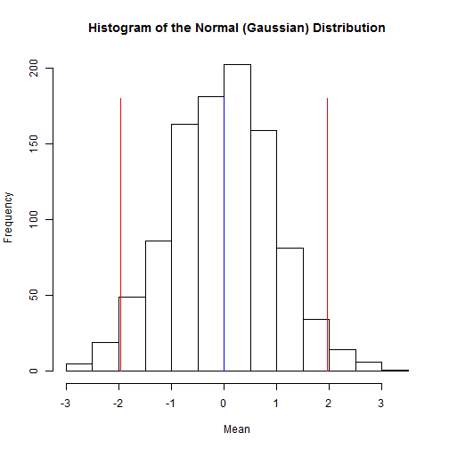

- The Standard Normal Distribution
- The standard normal distribution is defined by mu = 0 and sigma = 1
- Enter these values in Gaussian Explorer along with appropriate numbers for variates and bins
- Your result should look something like the histogram below
mu <- 0
variates <- 1000
sigma <- 1
bins <- 20
x <- rnorm(variates, mu, sigma)
height <- max(table(cut(x, bins)))
hist(rnorm(variates, mu, sigma), breaks = bins, xlab = "Mean", main = "Histogram of the Normal (Gaussian) Distribution")
lower <- qnorm(0.025, mu, sigma, lower = TRUE)
upper <- qnorm(0.975, mu, sigma, lower = TRUE)
lines(c(lower, lower), c(0, 1.5 * height), col = "red", lwd = 1)
lines(c(upper, upper), c(0, 1.5 * height), col = "red", lwd = 1)
lines(c(mu, mu), c(0, 1.5 * height), col = "blue", lwd = 1)
